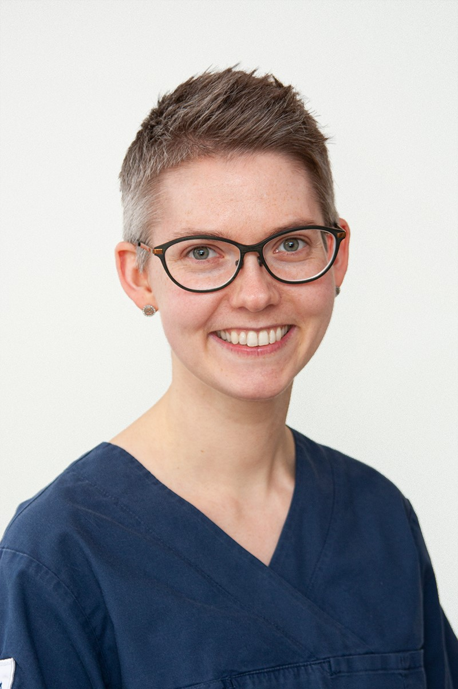

About JegVet
JegVet is created by veterinarian Lene Teigland Wilkinson.

Veterinarian
Lene Teigland Wilkinson
Clinic: Evidensia Trondheim Dyresykehus
Special focus areas
- Advanced dentistry / Odontology
- Skin and ear conditions / Dermatology
- Exotic animals, birds, rabbits and rodents
- Soft tissue surgery
- Emergency and intensive care